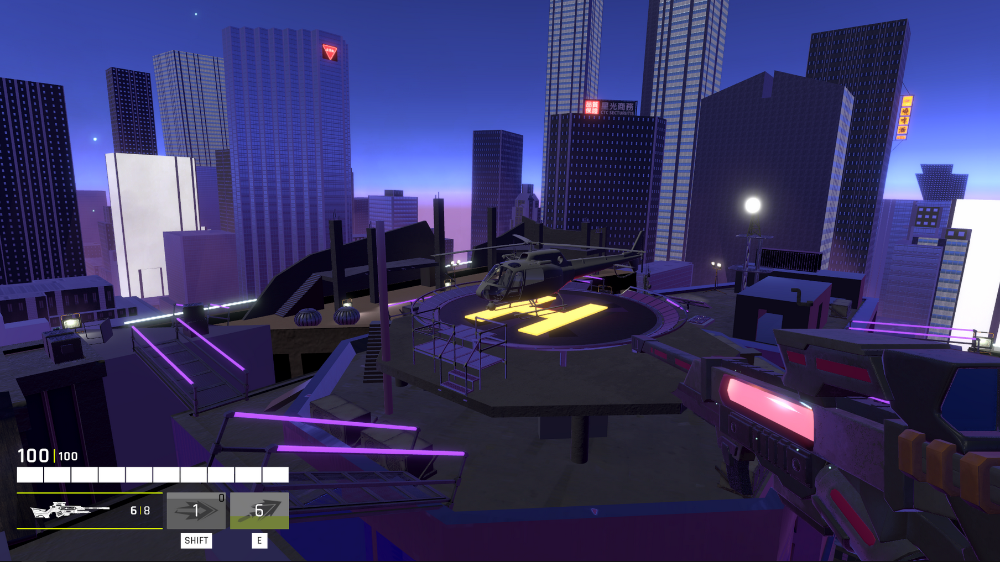

A screenshot from QuickShot.
My role:
Combat & Systems Designer
Unity | January 2024 - April 2024 | 13 Team Members
- Designed the primary weapon used in an action-packed FPS deathmatch game.
- Researched weapon parameters, player sentiment, and pain points for sniper rifles in popular FPS titles.
- Collaborated with other designers to refine respawn timer and match end condition systems.
- Maintained accurate documentation of iterations and new findings throughout development.
- Rapidly prototyped and collected data from playtests led at least twice per week.